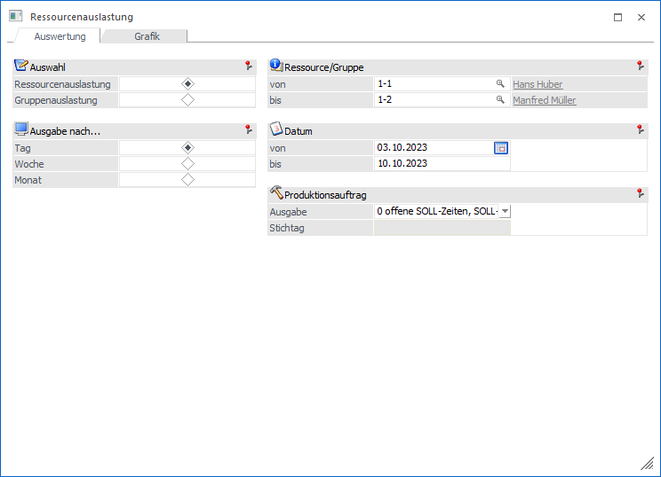
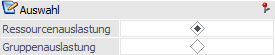
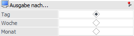
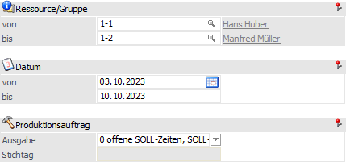
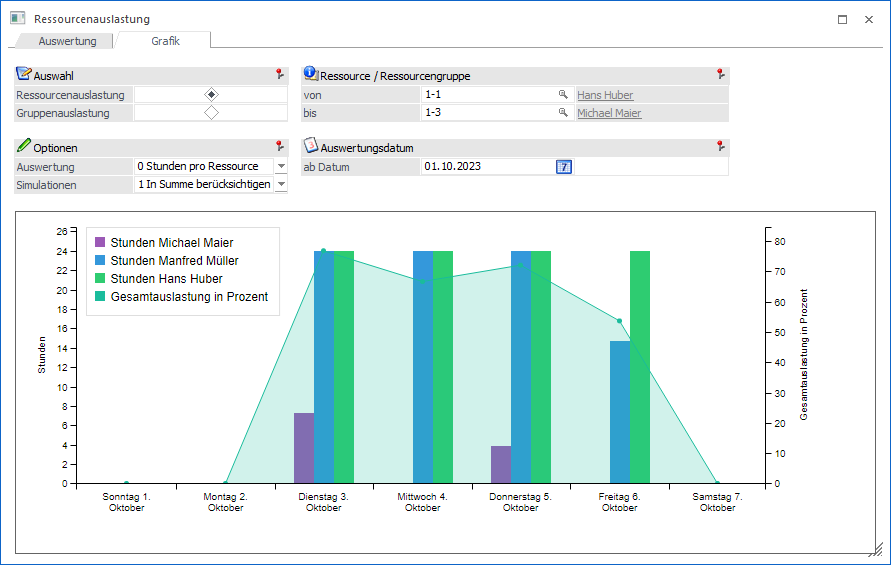
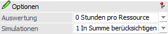
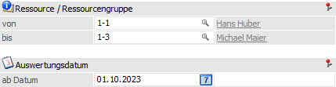
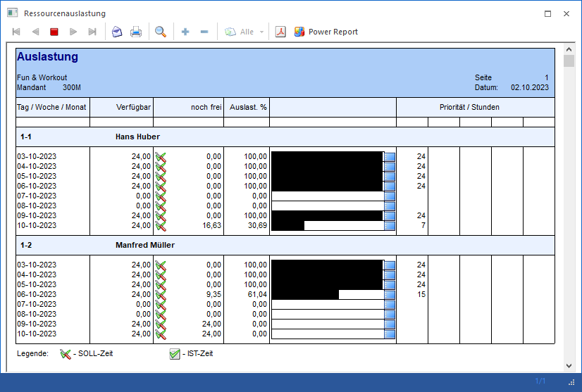

Im Menüpunkt
1 WinLine PPS
1 Auswertungen
1 Ressourcenauslastung
kann ausgewertet werden, wann die Ressourcen verfügbar sind, wann sie noch zur Verfügung stehen und wie hoch der Prozentsatz der Auslastung an bestimmten Tagen, Wochen bzw. Monaten ist. Das Fenster ist dabei in die folgenden Register aufgeteilt:
ü Register "Auswertung"
Über das
Register "Auswertung" kann die Ressourcenauslastung in Form eines Drucks
ausgegeben werden.
ü Register "Grafik"
In diesem
Register kann die Auslastung in Form eines grafisches Formats ausgewertet
werden.
Register "Auswertung"

Die Ausgabe der Ressoucenauslastung kann nach den folgenden Kriterien eingeschränkt bzw. definiert werden:
Auswahl

Ø Ressourcenauslastung / Gruppenauslastung
Hier kann entschieden werden, ob die Auswertung pro Ressource oder für die Ressourcengruppe erfolgen soll.
Ausgabe nach…

Ø Tag / Woche / Monat
Hier kann entschieden werden, wie detailliert die Auswertung der Ressourcenauslastung (bezogen auf den Zeitraum) erfolgen soll. Es stehen die folgenden Varianten zur Verfügung:
ü Tag
ü Woche
ü Monat
Selektion

Ø Ressource/Gruppe von / bis
An dieser Stelle kann eine Einschränkung auf die auszuwertenden Ressourcen bzw. Gruppen erfolgen.
Ø Datum von / bis
In diesen Eingabefeldern muss der auszuwertenden Datumsbereich angegeben werden.
Ø Ausgabe
Mit Hilfe dieser Auswahl kann entschieden werden, welche Zeiten ausgegeben werden sollen:
ü 0 - offene SOLL-Zeiten,
SOLL-Zeiten (Planungszeiten)
Es werden die SOLL-Zeiten zur Ermittlung der
Ressourcenauslastung zu Grunde gelegt.
ü 2 - erfasste IST-Zeiten (noch
nicht endgemeldet), endgemeldete IST-Zeiten
Es werden die IST-Zeiten zur
Ermittlung der Ressourcenauslastung zu Grunde gelegt.
ü 3 - Simulationen
Bei der
Ausgabe "3 - Simulation" werden reservierte Zeiten für Simulationen im
Verhältnis zum Abschlußwahrscheinlichkeits-Prozentsatz der Simulation in die
Ressourcenauslastung berücksichtigt / angezeigt.
ü 4 - Stichtagauswahl
Bei der
Ausgabe "4- Stichtagsauswahl" kann nachfolgend ein Datum erfasst werden. Alle
Zeiten vor dem Stichtag sind die IST-Zeiten und alle Zeiten nach dem Stichtag
sind die SOLL-Zeiten.
Bei der Ausgabe nach "Woche" oder "Monat" gilt immer
der 1. Tag folgenden des Zeitraums als Stichtag (in der Wochenansicht wäre es
der nächste "Montag"; in der Monatsansicht natürlich der 1.des folgenden
Monats). Damit wird z.B. bei der Auswahl nicht ein Teil des Monats oder Woche
mit IST-Zeiten und die restliche Zeit mit der SOLL-Zeit berechnet.
Beispiele
Woche -> Stichtag 18.10.2023
(Mittwoch) -> alles vor dem 23.10 (folgende Montag) = IST-Zeit; alles gleich
bzw. nach dem 23.10 = SOLL-Zeit
Monat -> Stichtag 26.09.2023 -> alles
vor dem 01.10.2023 (folgende Monat) = IST-Zeit; alles gleich bzw. nach dem
01.10.2023 = SOLL-Zeit
Hinweis
Bei der Auswertung zu Ressourcengruppenauslastung werden hinterlegte Kalenderabweichungen ("Ausreißer") auch für die Kapazitätsberechnung berücksichtigt. D.h. dass die Ausreißerzeit von der gesamt verfügbaren Zeit an einem Tag abgezogen wird, um die tatsächlich verfügbare Zeit zu ermitteln.
In diesem Sinne wird für die Gruppe solange reserviert bis die verfügbare Zeit an einem Tag aufgebraucht ist (Achtung… es können Überkapazitäten für die Reservierung auch verwendet werden!). Die genauen Uhrzeiten im hinterlegten Ausreißer werden allerdings für die Kapazitätenplanung nicht berücksichtigt - nur die gesamt verfügbare Zeit.
Ø Stichtag
Für die Ausgabe "4 - Stichtagauswahl" muss an dieser Stelle ein Stichtagsdatum hinterlegt werden.
Register "Grafik"

In diesem Register können die Auslastungszeiten bzw. -prozentsätze von Ressourcen bzw. Ressourcengruppen im grafischen Format ausgewertet werden. Die Berechnung der Auslastung erfolgt hierbei ausschließ auf Basis von offenen Produktionsaufträgen (d.h. offenen SOLL-Zeiten).
Hinweis
Die Aktualisierung der Grafik erfolgt durch Anwahl der Ribbon-Buttons "Täglich", "Wöchentlich", "Monatlich", "Quartal" bzw. "Jährlich".
Auswahl
Ø Ressourcenauslastung / Gruppenauslastung
Hier kann entschieden werden, ob die Auswertung pro Ressource oder für die Ressourcengruppe erfolgen soll.
Optionen

Ø Auswertung
An dieser Stelle kann der Detailgrad der grafischen Auswertung hinterlegt werden:
ü 0 - Stunden pro Ressource
ü 1 - Auslastung % pro Ressource
ü 2 - Stunden je Prod.auftragkategorie und Ressource
ü 3 - Auslastung % je Prod.auftragkategorie und Ressource
ü 4 - Stunden verfügbar
Ø Simulationen
Hier kann selektiert werden, ob die Kalenderzeiten für die Ressourcen bzw. Ressourcengruppen in Verbindung mit Simulationen in die Ausgabe mitberücksichtigt werden sollen.
Hinweis
Simulationszeiten werden im Verhältnis zum Abschlußwahrscheinlichkeits-Prozentsatz des jeweiligen Simulationsauftrags in die Ausgabe mitgerechnet.
Beispiel
Eine Ressource ist grundsätzlich für 8 Stunden am Tag verfügbar. Die Ressource ist an einem bestimmten Tag 4 Stunden für einen Produktionsauftrag reserviert und für 2 Stunden für eine Produktions-Simulation. Die Simulation hat einen Abschlußwahrscheinlichkeits-Prozentsatz von 50%. Somit ist die Ressource für insgesamt 5 Stunden an dem Tag ausgelastet (4 Stunden + 2 Stunden x 50%).
Selektion

Ø Ressource / Ressourcengruppe von / bis
Einschränkung der Ressourcen bzw. Gruppen, die ausgewertet werden sollen.
Ø Auswertedatum
Hier kann das Datum hinterlegt werden, ab dem die Auslastungen ausgewertet werden sollen.
Buttons
Ø Ausgabe Bildschirm (nur im Register "Auswertung")
Mit Hilfe des Buttons "Ausgabe Bildschirm" oder der Taste F5 wird die Auswertung am Bildschirm ausgegeben.
Hinweis
Mit einem Mausklick auf den Balken bzw. den "Blauen Button" öffnet sich das Fenster Leitstand). Dort können die Produktionsaufträge umgeplant, verschoben etc. werden.

Ø Ausgabe Drucker (nur im Register "Auswertung")
Durch Anwahl des Buttons "Ausgabe Drucker" wird die Ressourcenauslastung am Drucker ausgegeben.
Ø Ende
Durch Anwahl des Buttons "Ende" oder der Taste ESC wird das Fenster geschlossen.
Ø Täglich / Wöchentlich / Monatlich / Quartal / Jährlich (nur im Register "Grafik)
Mit Hilfe dieser Buttons kann die Ausgabe bzw. Aktualisierung der Grafik im Register "Grafik" vorgenommen werden.
Ø Voreinstellung speichern (nur im Register "Auswertung")
Durch Anwahl dieses Buttons erfolgt eine benutzerspezifische Speicherung aller im Fenster getätigten Einstellungen. Diese sogenannten "Voreinstellungen" können jederzeit wieder abgerufen werden und ermöglichen dadurch ein schnelleres und zielorientierteres Arbeiten (nähere Informationen entnehmen Sie bitte dem Kapitel "Die Voreinstellungen").